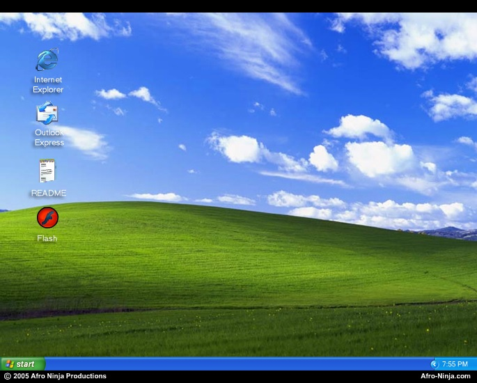
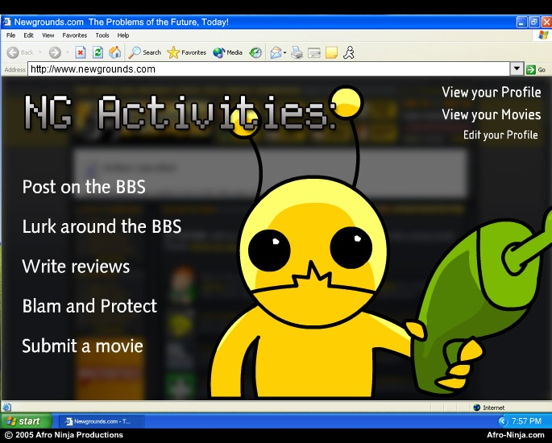

The Internet is Serious Business!
Home > Computers, Technology, and Internet > Newgrounds > Newgrounds SIM
Newgrounds SIM (SWF file) is a simulation game centered around building up a respected profile and Flash career on Newgrounds. There are many in-game stats, a simulated Newgrounds profile page which automatically updates to reflect your progress within the game, as well as the ability to perform such actions as posting on the BBS, writing reviews for other Flashes, and even making your own Flash animations/games for submission to a simulated Flash Portal. I first played the game on Newgrounds; I am nearly certain that I discovered it sometime during the second half of 2006, most likely during my summer break from school that year. At the very least, I definitely encountered it after I had already registered my Newgrounds account at the beginning of July 2006, as I recall that, when I played it, many of the game's features and activities—which are based upon real aspects of the Newgrounds Web site and its user accounts as they existed back in those days—were familiar to me from my experience of using an account on the site.
The game's concept is certainly an interesting one, and obviously appeals to the Newgrounds userbase. During my initial playthrough I very quickly took a liking to it, having at that point spent much time on Newgrounds and derived much enjoyment from it. Like most Flash games, however, it is very casual, and once the novelty value has worn off, it has little replay value, which is why (I can remember with some fogginess) I probably only played the game once, in a stretch lasting for no more than a few days, and thereafter never returned (until now) to playing it again. When today I look back upon it, what I find myself remembering the most about Newgrounds SIM is actually its relaxing background music, which consists of nothing more than an endlessly repeating eight-second loop that, because of the not insignificant amount of time (for a Flash game, anyway) I spent with total attention as a kid playing this game, has now been permanently burned into my memory.
Playing this game again in 2021, I am immediately struck by the presence in it of Windows XP: the desktop computer featured in Newgrounds SIM, on which most of the gameplay occurs, runs
Windows XP, as can be seen in the image below.

You will notice that the top-left item on this simulated desktop is none other than the One True Browser. In the game, the Web browser you use to access the simulated Newgrounds is the fifth reincarnation of the great Internet Explorer—that is, the venerable Internet Explorer 6 (IE6):

When I first played this game back in 2006, I hardly noticed the inclusion of Windows XP and IE6, for they were, respectively, the operating system and Web browser I used myself, and which I also knew that virtually everybody else used; seeing them in this game therefore did not, unlike today, stick out to me as anything particularly noteworthy or unusual, but was rather simply a routine sight. Newgrounds SIM was released in May 2005, back when Windows XP and IE6 were ubiquitous; nearly everyone on Newgrounds back then—and even on the entire Web—would have accessed the site (along with every other Web site) through Internet Explorer 6 on their Windows XP desktop PCs. In making a simulation game, the author very likely sought to imitate as closely as possible the typical individual's personal computing experience and environment, which at the time meant specifically depicting Windows XP and IE6, rather than something else. The game's focus is Newgrounds, and including some bizarre and exotic OS (e.g. Mac or Linux) and/or browser (e.g. Firefox or Safari; Chrome at the time, happily, did not even exist) would have been out-of-place and distracting.
This little part of the game, then, offers a glimpse into the state of the PC world and the Web as they existed in the mid-2000s, and I admit that it filled me at once with a great longing for those simpler, more serene times, when Windows XP dominated the OS market, when Internet Explorer 6 drove the Web, when Microsoft was the undisputed king of both PCs and Web browsers, and when all was right, true, and correct in the realm of computing.


 All written materials on this Web site are my own, and all are released under the Do What the Fuck You Want to Public License Version 2.
All written materials on this Web site are my own, and all are released under the Do What the Fuck You Want to Public License Version 2.
This page last modified on 26 March 2021.